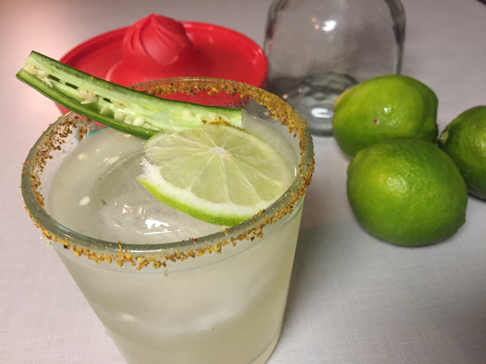

Margarita

This margarita recipe is sure to delight. Like a classic margarita, but spicy to give an extra little kick and pizzaz.
Ingredients:
- Triple Sec
- Tequilla
- Tajin Chili-Lime Seasoning
- Lime Juice
- Simple Syrup
Steps:
- Add ice to shaker cup.
- Add 2oz Tequilla, 1oz Triple Sec, 0.75oz Lime Juice, and 1oz Simple Syrup to shaker glass.
- Shake until sufficiently mixed.
- Soak rim in Jalepeno Juice, and salt rim with Tajin.
- Strain cocktail over fresh ice.
- Garnish with lime wedge and serve.